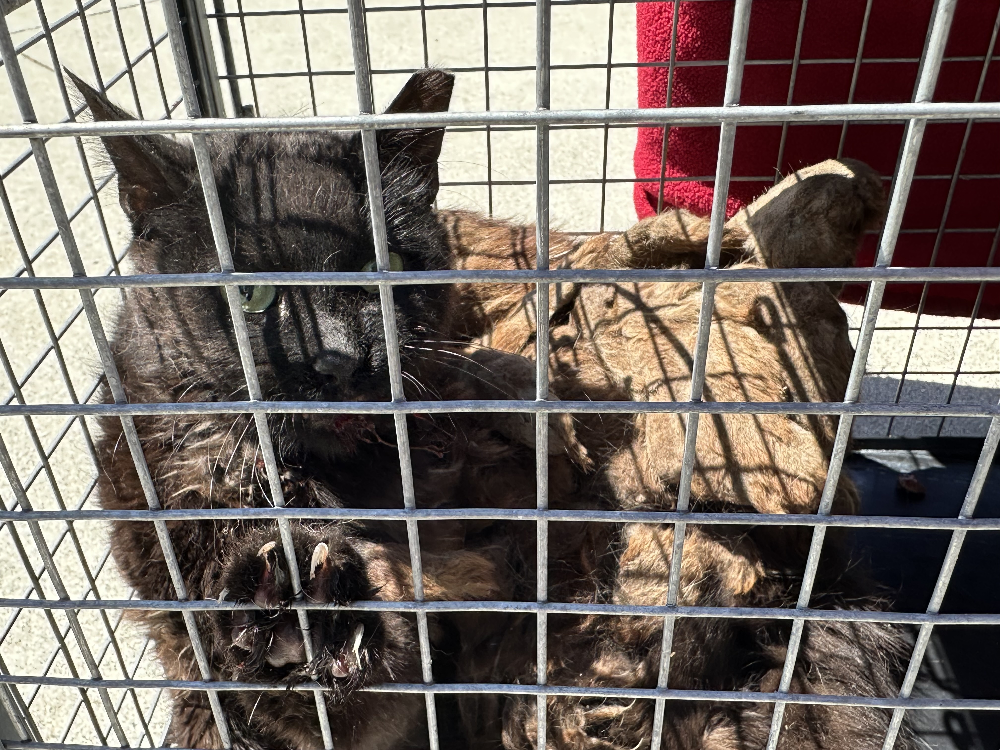
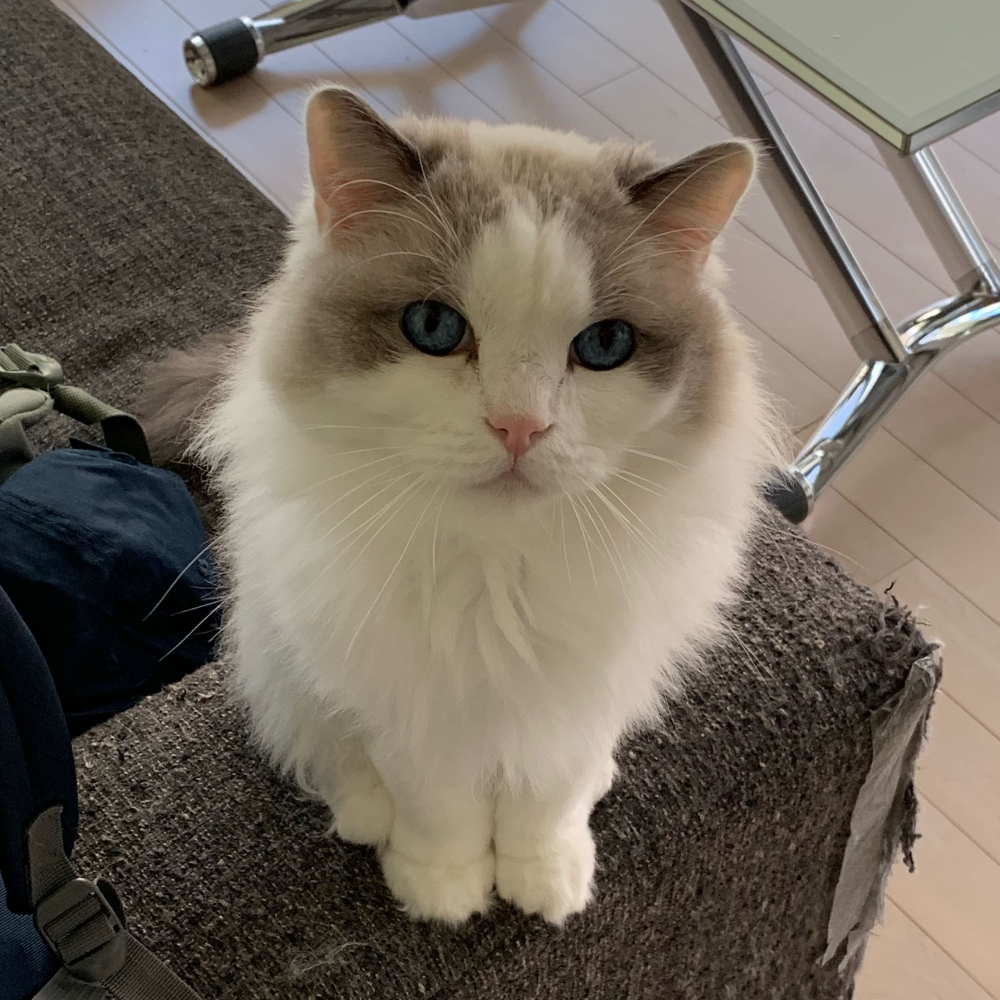

There are two means of refuge from the miseries of life: music and cats.
Albert Schweitzer, German-French theologianWe believe every feline deserves respect and access to a safe, nurturing environment. Our mission is to ensure that every adoptable cat in our care finds a loving home.
Contact UsWe are committed to humane, effective approaches for supporting outdoor cat populations:
We rescue cats and kittens in need, placing them into safe foster homes and ultimately into permanent, loving families.
We work in partnership with other animal welfare organizations and government agencies to advocate for policies and programs that protect and support feline lives.
Read about our mission and history, meet our board, see last year's numbers, and find out what we're building next.
See the numbersIzzy Mae Feline Rescue has been a true blessing. The adoption process was seamless, and our new cat has brought immense joy to our home. The staff is incredibly caring and knowledgeable
Adopting from Izzy Mae Feline Rescue was a wonderful experience. The team was supportive throughout the process, and our new feline friend has settled in perfectly. Highly recommend their services!
Frank (my adopted cat) carried me through the pandemic, thanks to the amazing team at Izzy Mae Rescue.